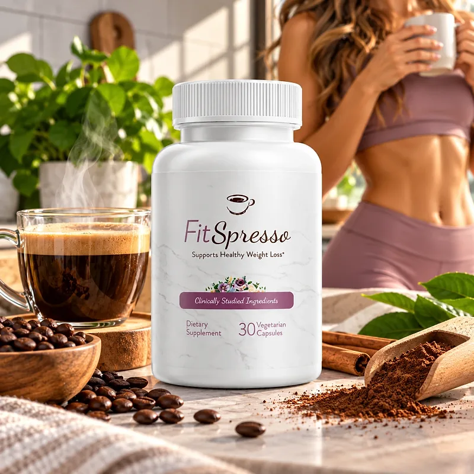
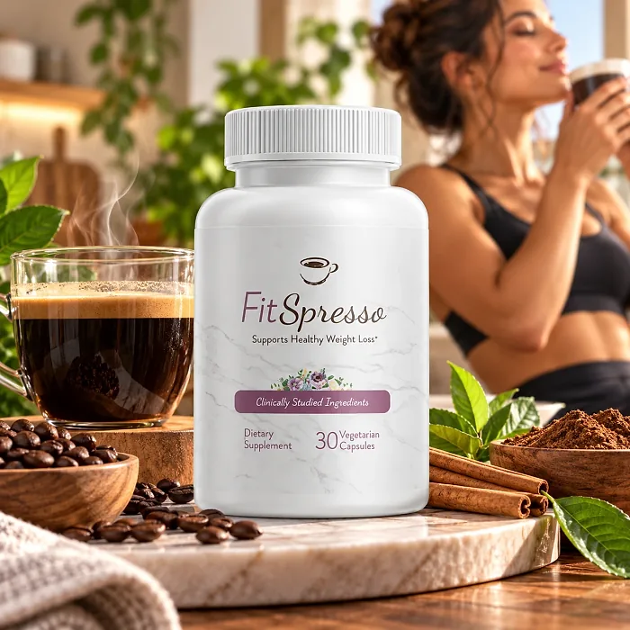
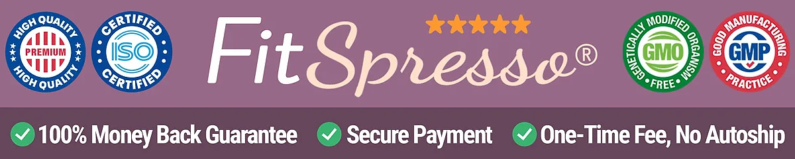

What Is FitSpresso And How Does It Work?
FitSpresso is a dietary supplement in vegetarian capsules built around a simple idea: pairing a daily capsule with your morning coffee routine to support healthy weight loss, a healthy metabolism, and steady energy, for adults who feel that cravings and a slower metabolism keep getting in the way of their goals.
The label reads "Supports Healthy Weight Loss" and "Clinically Studied Ingredients." The official order page lists three goals: promoting healthy blood sugar, boosting metabolism naturally, and supporting sustainable weight loss, with a formula it calls 100% natural.
The official sales presentation is a video about a "coffee loophole", and the scientific references listed below it cover green tea catechins, caffeine, L-theanine, green coffee bean extract, and L-carnitine, along with studies on how fat cells follow a daily rhythm. These references show the ideas behind the product, but the website does not confirm the exact formula.
Rather than acting as an overnight fix, FitSpresso is meant to work gradually, as part of a morning routine combined with healthier meals and regular activity.
With consistent daily use, a formula of this kind is intended to support more energy, fewer cravings, and steady progress, especially when combined with balanced eating, enough water, good sleep, and movement.
From a practical standpoint, FitSpresso is a bottle of 30 vegetarian capsules — nothing to brew or mix, and easy to keep next to the coffee maker.
It is a dietary supplement, not a medication. The official website does not publish the Supplement Facts panel or a named list of ingredients, so anyone who wants to check the exact formula should look at the label on the bottle or ask customer support before ordering.
FitSpresso Side Effects
FitSpresso is presented by the official website as a 100% natural formula, designed for adults who want a simple, natural approach to weight management that fits into a routine they already have.
The badges shown with the product describe it as made under Good Manufacturing Practices, non-GMO, and of premium quality, which supports consistency from batch to batch.
There are no widespread reports of serious side effects. Because the official website does not list the ingredients, it is not possible to point to specific interactions. One point deserves attention: the product is designed to be taken with coffee, and the studies it cites involve caffeine and green tea, so the total caffeine of the day can add up. People sensitive to stimulants should check the label and keep an eye on how many cups they drink. Anyone who takes medication for blood sugar should talk to their doctor first, since the order page mentions blood sugar support. It is not intended to diagnose, treat, cure, or prevent any disease, and individual results may vary.
Pregnant or nursing women, people under 18, and anyone with a medical condition or taking prescription medication should consult a physician before using FitSpresso.
FitSpresso Dosage
Each bottle of FitSpresso contains 30 vegetarian capsules. The official website does not publish the suggested use, so the directions printed on the label are the reference to follow.
The product is presented as part of a morning coffee routine: taking the capsule at the same time as your first cup makes the habit easy to remember and keeps the routine consistent. If you skip coffee on some days, take the capsule with a glass of water at the same hour.
For best results, consistency is key. The official packages come with one, three, or six bottles, and because metabolic support builds gradually, many people make it part of an ongoing routine rather than a short trial.
A few simple habits help: keep the coffee black or lightly sweetened, drink enough water through the day, eat balanced meals with protein and fiber, and add some daily movement, even a short walk after meals.
As with any dietary supplement, it's important not to exceed the recommended dose and to check the label on your bottle. FitSpresso works best when used regularly, combined with proper hydration, balanced nutrition, and healthy daily habits.
FitSpresso – Refund Policy
You can order FitSpresso with confidence, knowing that every purchase is protected by a 60-day, 100% money-back guarantee. This allows you to try the product and decide if it delivers the support you expect.
According to the refund policy on the official website, if you are dissatisfied for any reason during the first 60 days after purchase, you can call or email customer support to request a refund. The policy asks you to send back any unused bottles, and the return shipping is paid by the customer.
How the refund process works: Contact support by phone or email, then send the bottles to FitSpresso, 19655 E 35th Dr #100, Aurora, CO 80011, USA. Once the refund is processed, you receive an email confirming it. The policy also asks, optionally, for a short note on why the product was returned.
Customer Support Contact Information: the phone line 1-877-607-7721, open from 7 AM to 9 PM, 7 days a week, or the support email listed on the contact page of the official website. According to the contact page, emails are answered within 24 hours.
Refund Processing Time: According to the refund policy, the credit takes 5 to 7 business days to appear for credit cards and 5 to 10 business days for debit cards, depending on your bank.
This refund policy is designed to give customers a clear path when trying FitSpresso, with a published return address and phone support every day of the week.
FitSpresso – Where To Buy
FitSpresso is sold through its official website, so if you decide to try it, it's important to be careful about where you purchase it. The official website is the only sales channel the manufacturer lists, and it does not point to marketplaces such as Amazon, eBay, or Walmart.
Listings on third-party platforms may look similar but cannot be verified as authentic, raising concerns about safety, quality, and ingredient freshness. Products purchased outside the official source may not be covered by the money-back guarantee.
For this reason, it makes sense to purchase FitSpresso only through the official website. Buying directly from the official source ensures you receive the authentic original product, with access to customer support and the full guarantee. Orders placed there go through a secure checkout, and the return and contact pages are linked at the bottom of the official page.
To avoid counterfeit batches and ensure maximum quality, always verify that you are ordering from the official FitSpresso website before completing your purchase.
To ensure you’re getting the authentic product, most users choose to visit the official website.
Is FitSpresso A Scam?
Based on what the official website discloses, FitSpresso appears to be a real product: a capsule supplement with a published refund policy, a return address in Aurora, Colorado, and customer support by phone and email. It is designed to support healthy weight loss and a healthy metabolism as part of a consistent routine.
The main point of attention is transparency about the formula. The label speaks of clinically studied ingredients and the video page lists studies on green tea, caffeine, L-theanine, green coffee, and L-carnitine, but the website does not name the ingredients of FitSpresso or publish the label with the amounts. Before ordering, it is worth asking customer support for the full Supplement Facts panel.
A second point is the tone of the sales video, which promises to "drop 61 lbs in weeks" with a coffee "loophole", a result no dietary supplement can promise. The website also shares its design, references, and refund template with other products from the same network. On the positive side, the support details are clear: a phone line open every day, a support email, and a physical return address.
The official website shows a grid of smiling faces but publishes no written customer testimonials, so this review does not quote any. Results vary from person to person, and no supplement replaces a balanced diet, regular exercise, or medical advice.
FitSpresso is backed by a 60-day, 100% money-back guarantee, and the return steps, including the address and the shipping rules, are published on the official website, which gives customers a clear path if the product does not meet their expectations.
If you're looking for a simple daily capsule to pair with your morning coffee and support weight management and energy, FitSpresso is worth considering — especially when purchased directly from the official website.
For those who want to verify product details or check current availability, the official FitSpresso website remains the safest option.

Check Availability On Official Website
